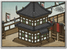

Requires
- Buildings: 
- Arts:
- Resources:

Enables
- Buildings:

- Units:


Basic Building Statistics (can be modified by difficulty level, arts, skills, traits and retainers)
- Cost: 4000
- -1 to spear samurai recruitment times in this province
Description
He who has the longest spear wins on points.
This dojo speeds up the training of spear-armed troops. It also improves the expertise and experience of spear units trained in this province. Spears are traditional weapons and have been for centuries, but skilled men are needed to get the best from the weapons. Samurai spearmen bring their single-minded dedication to the weapon, but still need training. Sojutsu, the art of the spear, is no longer a popular martial art in Japan, possibly because of the large amount of space needed for practice: kenjutsu, the art of the sword, needs far less room. Considered one of koryu, the traditional martial arts, the origins of sojutsu are lost in time, but it ceased to be taught on even a modest scale during the Meiji Restoration in 1866-9. Many schools were forced to close at that time, often after hundreds of years of continuous existence. The masters had relied on a rice stipend from the provinces to stay in business, and once that was gone the schools could no longer continue.